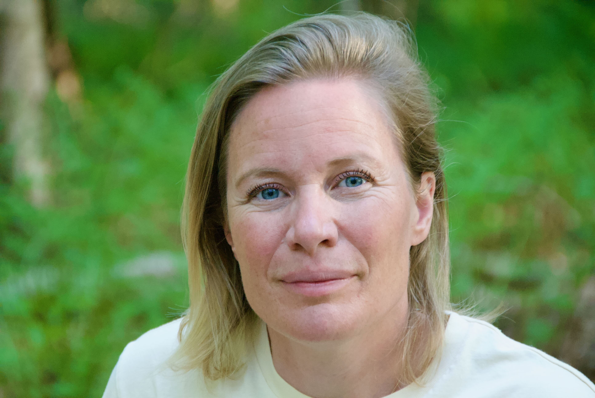
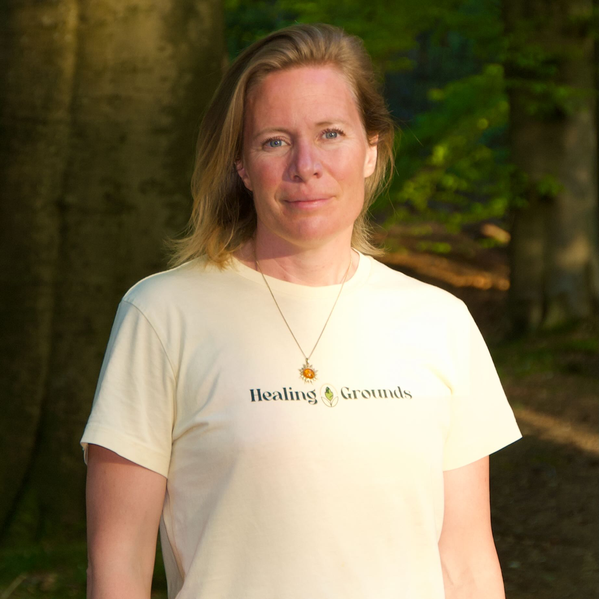
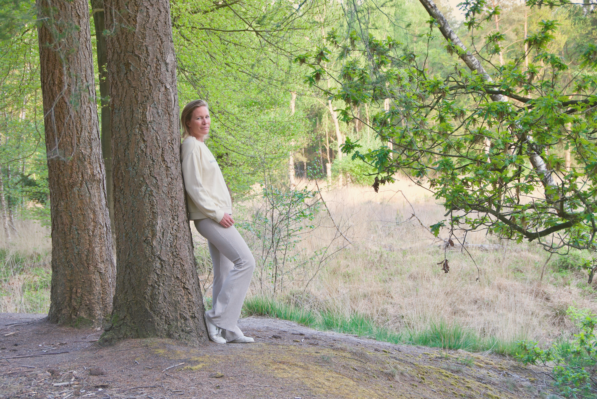

Welkom, ik ben Isabel
Verbinder met een missie die groter is dan ikzelf.

Ik geloof dat verbinding essentieel is.
De verbinding tussen lichaam en geest, voor de gezondheid van mensen.
De verbinding tussen ondernemer en onderneming, om de juiste keuzes te kunnen maken.
Het is mijn missie om mensen zich bewust te maken van die verbinding.
Ik ben een visionair met een scherp oog voor wat er beter kan en de energie om dat ook daadwerkelijk in beweging te zetten. Op mijn 15e begon ik met ondernemen, gedreven door de drang op te lossen wat niet werkte. Toch koos ik daarna voor het geijkte pad: ik studeerde in Utrecht, Dublin en Amsterdam, en accepteerde een baan bij de overheid.
Maar het schuurde, de vaste kaders van het systeem pasten me niet. Na vijf jaar en twee lange reizen besloot ik terug te keren naar mijn ondernemende natuur. Ik maakte de overstap naar de zakelijke wereld, waar ik jarenlang werkte met snelgroeiende startups en internationale scale-ups in de techwereld.
Het verlies van mijn vader en de inzichten uit zijn ziekteproces brachten me echter terug naar de essentie van wat er werkelijk toe doet voor mij: luisteren naar het lichaam, leven vanuit verbinding en zelf bouwen aan iets dat de wereld écht beter maakt.
Na een periode van persoonlijke verdieping en een sabbatical met mijn gezin, besloot ik in 2023 mijn leven te wijden aan mijn levensmissie: het eren van de verbinding tussen lichaam, geest, samenleving en aarde door de realisatie van Healing Grounds.
Ook mijn werk voor ondernemers groeide mee. Sinds 2026 integreer ik het bouwen van Go-to-Market strategieën met de energetische verbinding tussen ondernemer en creatie. Ik help ondernemers om inzichten vanuit een dieper bewustzijn te vertalen naar een concrete, nuchtere strategie voor hun onderneming.
Ik ben eerlijk, scherp en zacht tegelijk. Ik ben aanwezig in het moment en bij wat dat van me vraagt (al blijf ik een mens, geen Boeddha).


Ik heb mijn levensmissie gevonden in de creatie van Healing Grounds. Daarnaast heb ik mijn achtergrond in de dynamische startup-wereld verweven met energetisch werk. Ik gids ondernemers om uit hun hoofd te stappen en te luisteren naar wat hun onderneming nodig heeft. Vanuit de bewuste verbinding ontstaat helderheid over de volgende stap.
Wanneer het lichaam spreekt. Helpen wij je luisteren.
Healing Grounds beoogt mensen een plek te bieden waar ze terecht kunnen met lichamelijke, mentale, emotionele, sociale en spirituele klachten en wensen.
Zelfstandig sta je sterk. Samen worden we essentieel.
Betrouwbare en ervaren professionals werken bij Healing Grounds samen om mensen te ondersteunen bij het bevorderen van hun gezondheid.
Groei vanuit verbinding
Als (inter)national growth guide help ik founders bij het realiseren van impactvolle groei. Ik ben geen coach voor ondernemers, maar een gids voor je business.
Ik betrek het hart van de ondernemer om de koers van de onderneming helder te krijgen.
Hoe we samen kunnen werken
"Isabel hielp ons verbinden met de essentie van onze creatie en met elkaar als co-founders. Vanuit die diepe verbinding werd moeiteloos helder wat onze volgende stappen zijn."
Nelieke & Oscar, co-founders van RadicAI Recruitment"Ik had nog nooit ademwerk of een meditatie gedaan, maar de nuchtere begeleiding van Isabel hielp me een diepere laag van bewustzijn te bereiken, van waaruit precies helder werd wat mijn onderneming van me nodig heeft."
Danielle Ackermans-Adams, Adca ContractbeheerIk deel mijn visie op de verbinding tussen lichaam en geest, en de impact daarvan op ons leven en werk, graag via verschillende kanalen. Mijn doel is altijd om het bewustzijn over deze essentie te vergroten en de dialoog hierover op gang te brengen, of dat nu op een podium is, in een boardroom, of via een podcast.
Spreken & Gastoptredens
Ben je op zoek naar een spreker die de mensen raakt en de verbinding tussen lichaam en geest ter plekke laat ervaren? Of een gast voor een podcast over bewustzijn en leiderschap? Ik deel mijn verhaal graag om beweging te creëren. Laten we de mogelijkheden bespreken.